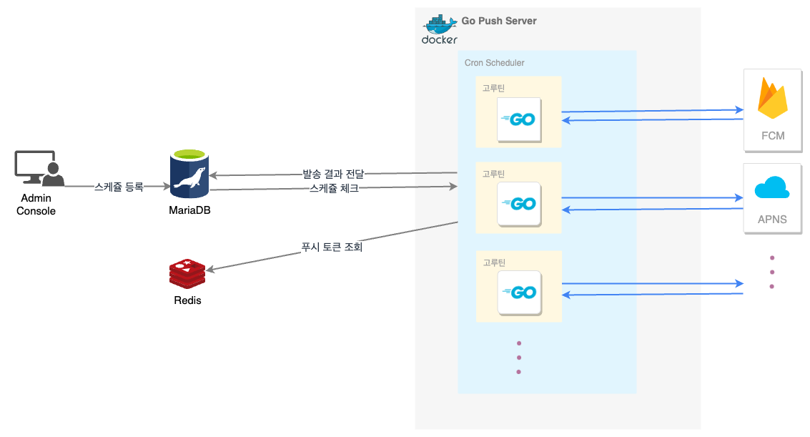

Push Server
개요#
API 서버와 마찬가지로 기존 푸시서버에는 문제가 있었습니다. 대표적인 문제점으로는
- iOS와는 달리 안드로이드는 푸시 메시지가 몇시간씩 지연되는 경우가 잦았다.
- 푸시서버 기능이 어드민에 포함되어 있어 배포, 확장, 관리에 부적합했다.
- 사용자가 푸시 스케쥴관리에 불편함이 많았다.(Admin)
가 있었고 이외 여러가지 이유로 인해 API 서버와 마찬가지로 Go언어로 개발하게 되었습니다.
목적#
광고 마케팅에 있어서 앱 푸시는 굉장히 중요합니다. 특히나 게임은 앱 카테고리중에 푸시 수신율이 가장 저조하기 때문에 앱 푸시를 세밀한 타겟팅으로 보낼 수 있게 해야 합니다. 그래서 SDK 를 이용하는 프로젝트들에 대해서 범용적으로 사용할 푸시서버가 필요하다고 생각했습니다.
요구사항#
- 플랫폼, 스토어, 국가 타입에 따른 타겟팅
- 테스트, 프로덕션 모드 제공
- 즉시 발송 및 예약 발송
- 언어별 메시지 설정
개발 히스토리#
푸시 서비스의 최초 시발점
푸시 메시지를 받을 유저들의 정보를 불러올때 휴면회원인지 탈퇴회원인지 푸시 동의를 했는지 여부를 확인해야 하고 광고성인 경우에는 광고 수신 동의 여부도 체크해야 합니다. 그런데 해당하는 조건의 데이터를 한 번에 가져오려면 DB로 불필요한 호출이 많아집니다.
문제점에도 언급된 푸시 지연이 바로 이 부분입니다. iOS 경우에는 유저수가 많지 않았기 때문에 드러나지 않았지만 안드로이드는 상대적으로 유저수가 많다보니 디비부하로 인한 푸시 지연이 바로 나타났습니다.
이 부분을 해결하기 위해 스케쥴 정보(날짜시각 및 타게팅 정보) 조건에 맞는 유저 토큰 조회는 Redis를 타도록 했습니다. 그리고 API 서버에서 인증 처리시 Redis 푸시 테이블은 불필요한 데이터를 줄이기 위해 프로젝트, os, 국가, 스토어별 속성만 갖게 하고 활성화 유저이면서 푸시 동의를 한 유저만 테이블에 미리 올라오도록 했습니다.
fcm 은 경험상 지연되는 사례를 많이 겪어봐서 fcm, apns 둘다 사용하기로 했고 만약 fcm 지연이 되더라도 apns 는 지연되는 경우에 없기 때문에 장애를 최소화 할 수 있을거라고 생각했습니다.
상태값은 대기, 진행중, 성공, 실패 로 나뉘며 분산처리는 고루틴 사용하였습니다.
푸시가 전달되는 과정#
- Admin 에서 푸시 스케쥴 등록(제목, 내용, 대상자 등의 정보 포함) 및 RDB에 저장
- 푸시서버내에서 Cron으로 스케쥴정보 체크
- 푸시서버 스케쥴러가 RDB에서 스케쥴정보를 가져와 조건에 맞는 토큰 조회(Redis)후 푸시 전송
- 푸시를 보내고 푸시 결과를 RDB에 저장
설계 및 다이어그램#

서버 푸시 모듈 개발#
FCM#
특징
- fcm api 중에 1000건씩 발송이 가능한 그룹발송용 api가 있다.
- 안드로이드 클라이언트가 백그라운드 상태에서도 푸시알림 팝업을 띄우려면 푸시알림 설정에 대해서도 알아야 합니다.
발송 대상자가 만명일 경우 10번에 나눠서 고루틴으로 처리했습니다. 그리고 DB가 success(푸시 발송된 수), failure(푸시 실패 수)를 업데이트 할 수 있게 응답값을 리턴해주었다.
APNS#
특징
- fcm 과 달리 디바이스 토큰당 api 1회 호출
fcm 처럼 지연없이 몇번을 테스트해봐도 지연과 누락없이 발송되었습니다. 그러나 10만건이상 동시 발송될 상황을 고려해 고루틴으로 처리하였습니다.
TODO#
- 푸시 API 를 이용한 앱 삭제 트래킹
결론#
최종적으로 프로젝트가 중단되어 서비스를 하지 못했습니다. 라이브 서비스를 통하여 검증까지가 굉장히 기대가 되었고 문제점들을 극복해보고 싶었는데 그러지 못하여 정말 많이 아쉬웠습니다.